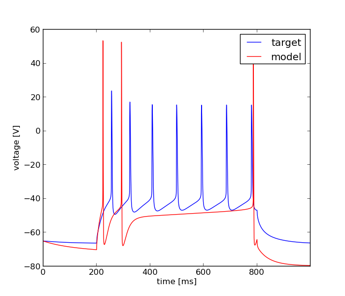

Fri Nov 1 06:17:26 2013
Optimization of ca1pc_model.hoc based on: /home/fripe/workspace/git/optimizer/tests/ca1_pc_simplification/Vinj48_2c_1.dat
Results
| Parameter Name | Minimum | Maximum | Optimum |
|---|---|---|---|
| soma Na_soma gmax_Na_soma | 0.001 | 1.0 | 0.986196908033 |
| soma K_DR gmax_K_DR | 0.0001 | 0.1 | 0.010345833298 |
| soma K_A_prox gmax_K_A_prox | 0.0001 | 0.1 | 0.0042680710671 |
| soma K_M gmax_K_M | 0.0001 | 0.1 | 0.0447453417567 |
| soma K_C_1D gmax_K_C_1D | 0.0001 | 0.1 | 0.0696086617593 |
| soma K_AHP gmax_K_AHP | 0.0001 | 0.1 | 0.0407530680463 |
| soma CaL gmax_CaL | 0.0001 | 0.1 | 0.000412786366601 |
| soma CaN gmax_CaN | 0.0001 | 0.1 | 0.0626238439813 |
| soma H_CA1pyr_prox gmax_H_CA1pyr_prox | 1e-05 | 0.01 | 0.00501827657184 |
Fitnes: 1.55452540615

Error Tolerance for x: = None
Size of Population: = 100.0
Accuracy: = None
Mutation Rate: = 0.25
Cooling Rate: = None
Final Temperature: = None
Std. Deviation of Gaussian: = None
Cooling Schedule: = None
boundaries = [[0.001, 0.0001, 0.0001, 0.0001, 0.0001, 0.0001, 0.0001, 0.0001, 1e-05], [1.0, 0.1, 0.1, 0.1, 0.1, 0.1, 0.1, 0.1, 0.01]]
Number of Generations: = 200.0
evo_strat = Classical EO
seed = 1234.0
Initial Temperature: = None
starting_points = None
Dwell: = None
Mean of Gaussian: = None
Error Tolerance for f: = None
num_inputs = 9
feats = PPTD
weights = [1.0]
user function =